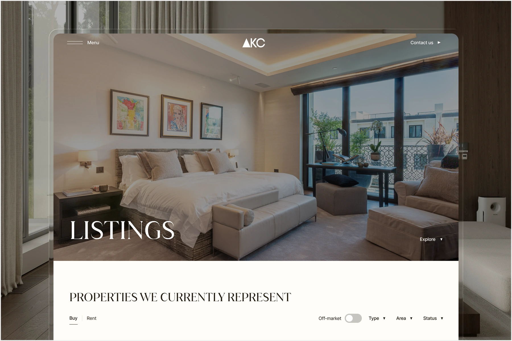
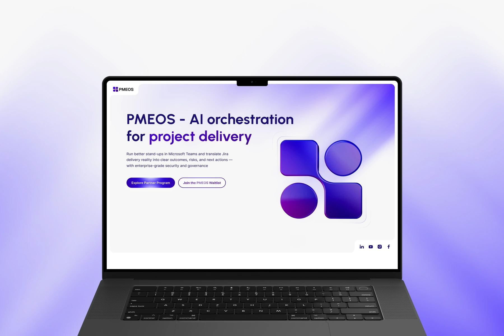
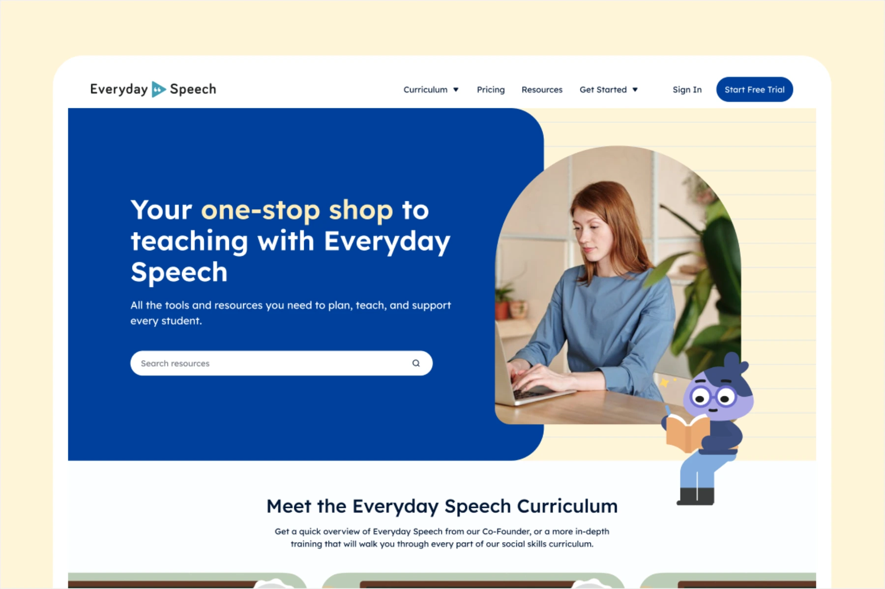
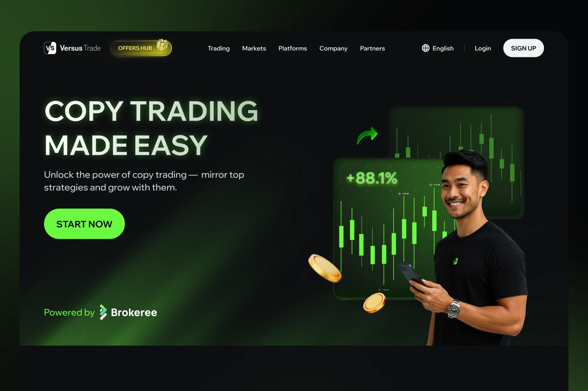

2026

AKC
- Real Estate
- Web Platform
- AI-assisted Development
A financial trading and account-management platform. The project is not realised yet.
This project is not realised yet.
I worked on an established product alongside a Design Lead, who reviewed my designs, provided feedback, and mentored me. My contribution focused on withdrawal and add-new-bank-account flows, following the existing UX patterns and design system.
My role focused on extending existing interfaces, with design reviews and mentorship from the Design Lead. I refined responsive screens and interactions within the established design system. The project is not realised yet.



